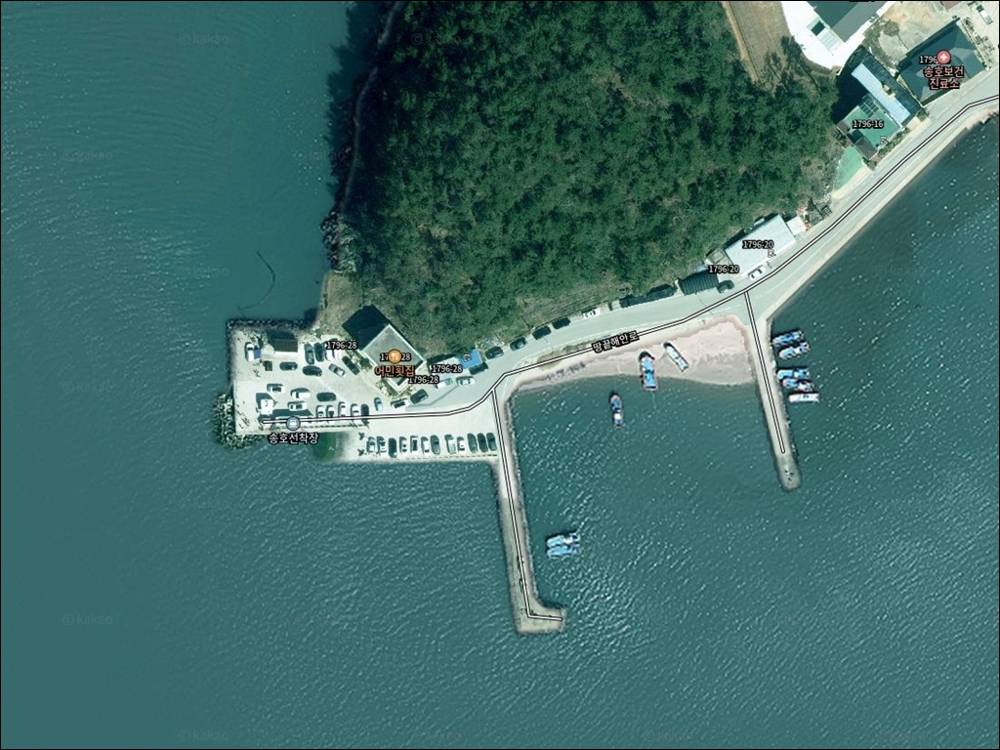
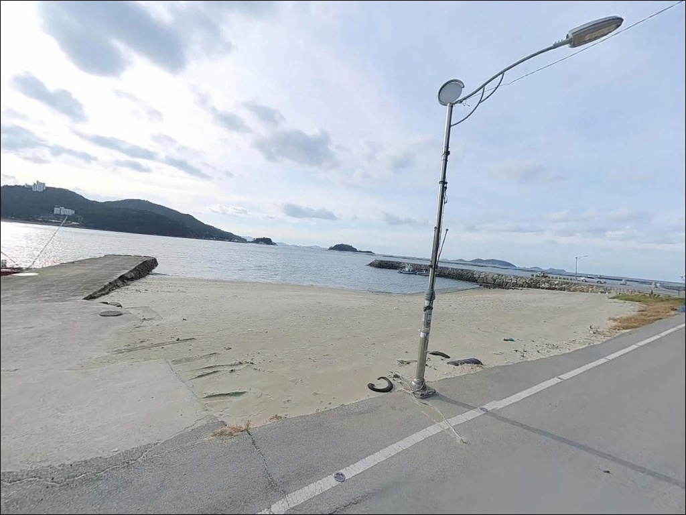
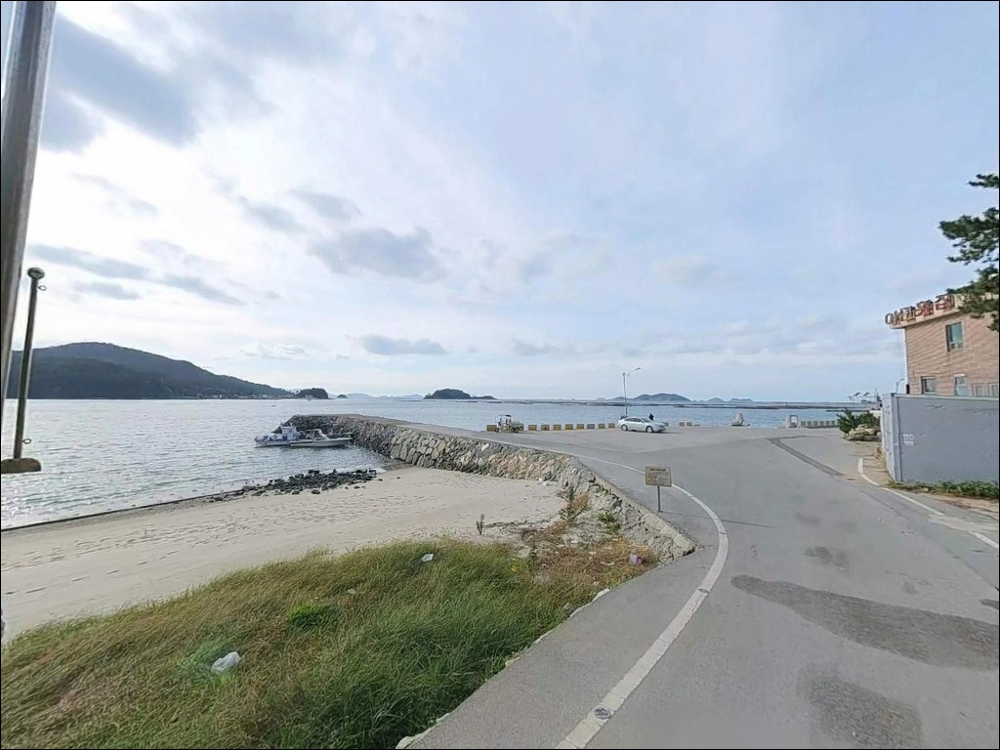
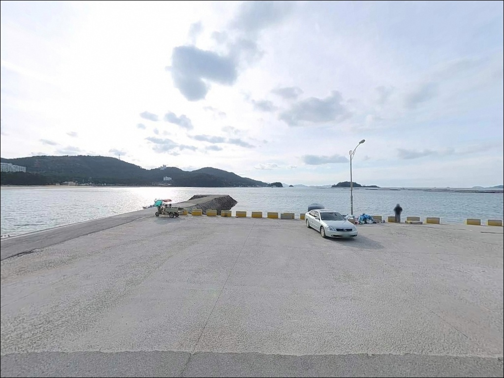
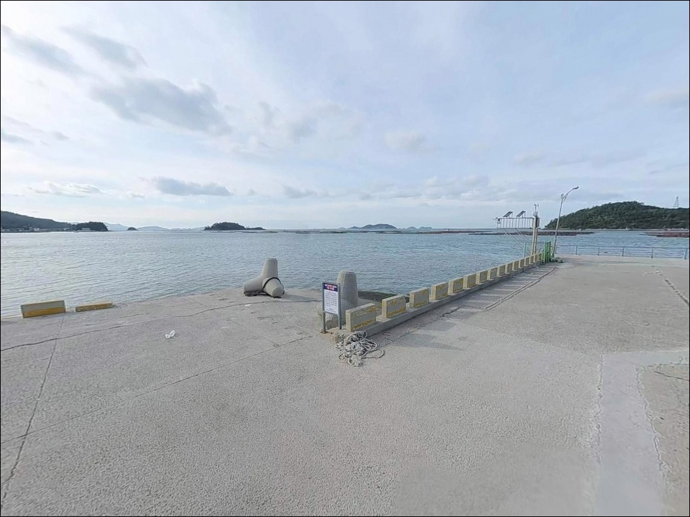
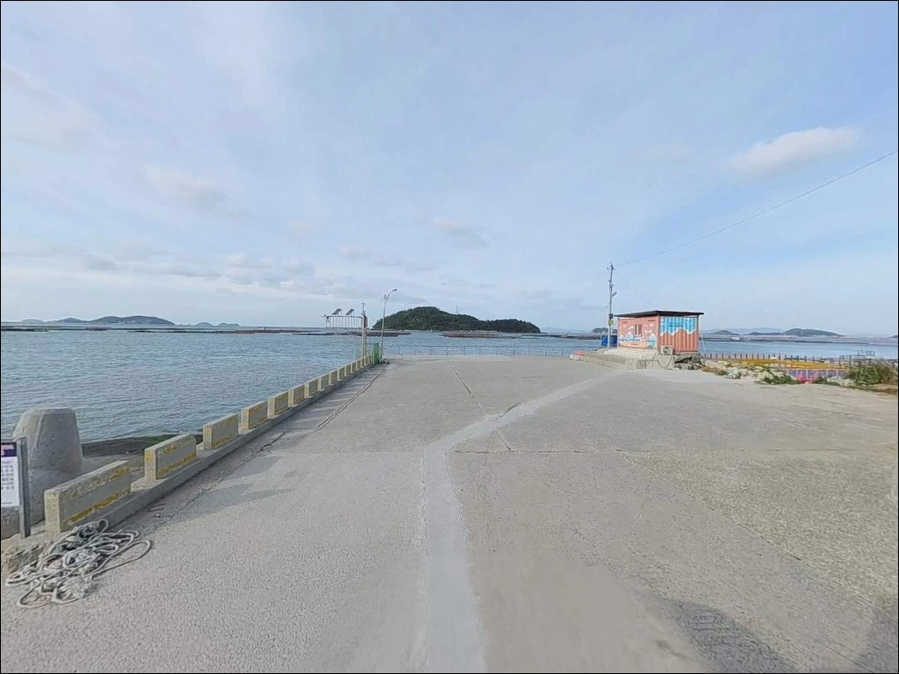
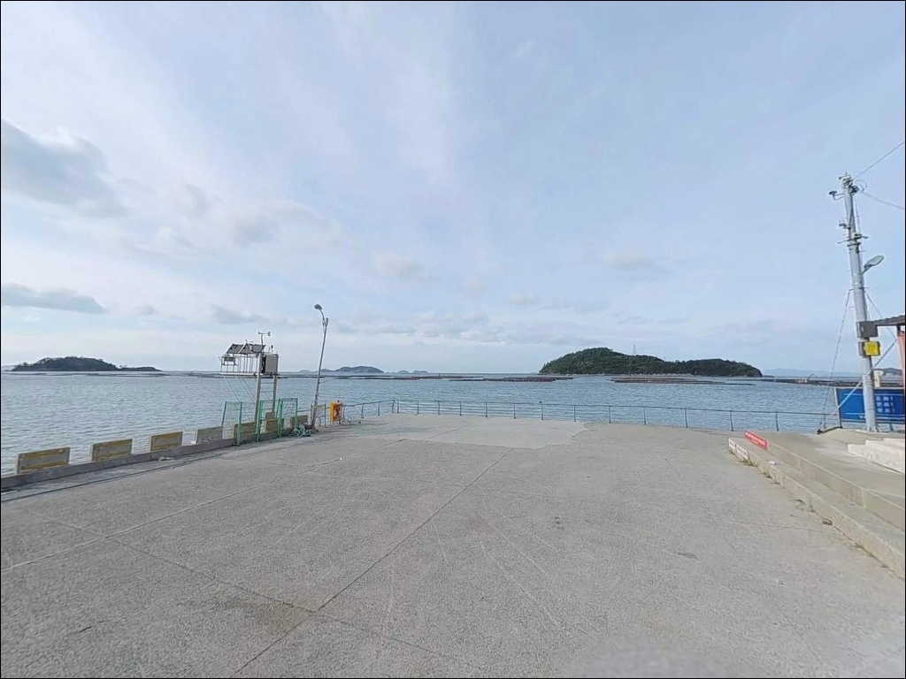
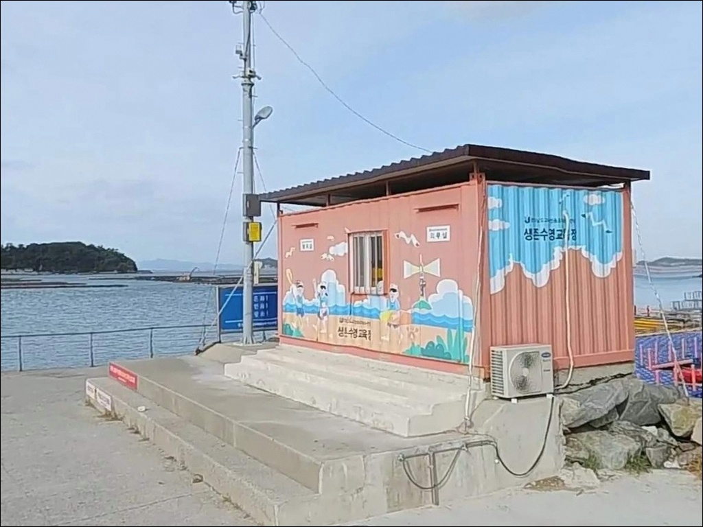
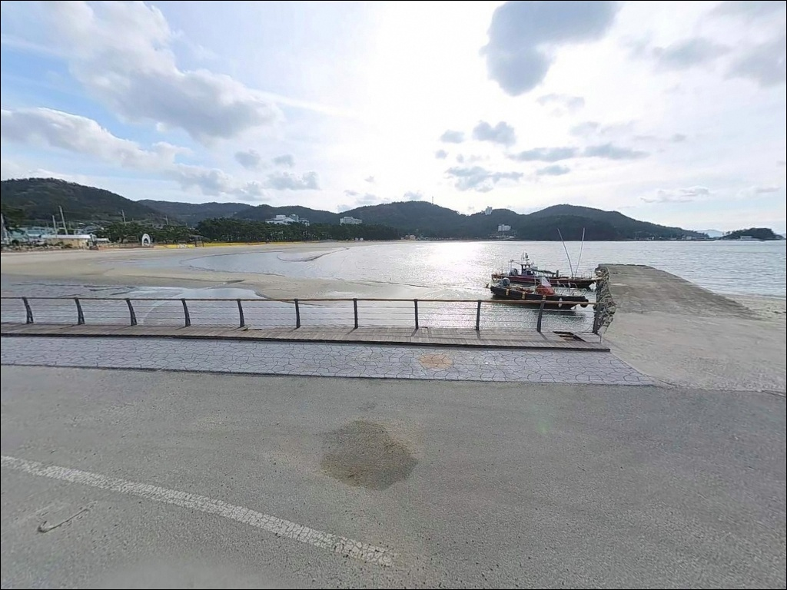

송호항, 송호리선착장, 송호리방파제, 전남 해남군 한적한 해안 도로 옆 숨은 바다 차박 낚시 명소


포인트 안내
송호항(송호리선착장, 송호리방파제)
전남 해남군 송지면 송호리 891-21
물때 확인 없이 이 선착장에 진입하면
수심 1m 내외의 얕은 바닥 구조상
간조 구간에 낚시 자리 자체가 줄어드는 상황이 생깁니다.
내만형 포인트 특성상 조금 전후 타이밍을
놓치면 이동 시간만 낭비하는 결과로
이어질 수 있는 곳입니다.
전남 해남군 송지면 송호리,
해남반도 남단 땅끝 권역의 소형 어촌 선착장입니다.
앞바다에는 양도·서화도 등 바위섬과 소도가 산재하는
다도해 구조로, 수로를 따라 조류 흐름이 형성됩니다.
인접한 땅끝송호해변과 함께
해남 남단 생활낚시 거점으로 활용되는 포인트입니다.
이 글은 송호항의 진입 환경, 지형 구조,
낚시 방식 적합성, 차박 체류 여건에 집중합니다.
조황 단정이나 특정 어종 보장은
이 글의 범위에 포함하지 않습니다.

1. 진입 동선과 주차 여건
해남읍에서 남쪽으로 약 40km,
13번 국도와 1번 군도로를 따라 이동하면
송호리에 닿습니다.
55번 지방도에서 송호리 방면으로 진입한 뒤
세븐일레븐 편의점 뒷길을 따라
선착장까지 접근이 가능합니다.
진입로는 포장도로로 연결되어 있어
승용차 기준 접근에 큰 어려움은 없습니다.
다만 선착장 끝단에서의 회차 공간이
여유롭지 않아, 대형 차량이라면
출발 전 위성지도로 진입로를
한 번 확인해두는 편이 좋습니다.
주차는 선착장 앞 공터 또는
인접한 송호해수욕장 주차장을
활용하는 방식이 현실적입니다.
해수욕장 주차장은 4개소에
약 800대 수용 규모로 확인됩니다.

2. 차박 환경과 야간 체류 여건
송호항은 민박 50여 동이 확인될 만큼
거주 밀도가 있는 어촌 마을과 바로 인접해 있습니다.
완전 고립형 포인트가 아닌
마을형 생활낚시 포인트 성격으로,
특히 여름 성수기에는 송호해변 유동인구 영향으로
조용하게 머물기가 어려운 편입니다.
비수기에는 한결 조용한 분위기가 됩니다.
해변 구역에는 가로등 29등이 설치된 것이 확인되며,
선착장 끝단은 야간 시야 확보를 위한
개인 조명 장비가 필수입니다.
차박을 메인으로 삼기보다는
낚시 후 단기 체류 거점으로 활용하는 방식이
이 포인트에 더 잘 맞는 접근입니다.


3. 주변 편의시설 및 인프라 현황
선착장 인근에 세븐일레븐 편의점이 위치하여
간단한 식음료와 소품 보충이 가능합니다.
낚시용품 면에서도 인근에 낚시용품점이
확인되어 있어 채비 보충에 활용할 수 있습니다.
반경 3km 권역 내 땅끝마을 관광지 상권에
식당과 숙박 시설이 형성되어 있습니다.
응급 상황 시 해남읍까지 거리가 상당하므로
비상약품과 식수는 출발 전 완비하는 편이
기본 준비입니다.

4. 물때 타이밍이 낚시 여건을 가르는 진입 전 판단
이 포인트에서 가장 먼저 할 일은
바다타임에서 물때를 확인하는 것입니다.
수심이 얕은 내만 구조 특성상
사리 전후보다 조금 전후 또는 만조 전후 타이밍이
낚시 여건에 유리합니다.
물이 빠지면 펄 바닥이 드러나는 구간이 생기고
채비 운용이 어려워지는 구조입니다.
앞바다에 섬이 산재하는 다도해 구조 특성상
기상 변화가 빠른 편입니다.
출조 당일 아침 기상청 예보를
한 번 더 확인하는 것이 포인트 낭비를 막는 조건입니다.
펄 저질 구간에서 원투 시 채비가 파묻히기 쉬우므로
여분 채비를 넉넉하게 챙겨가는 편이
현장 여유를 만듭니다.
마을 선착장이라 어선 이동 동선이 있습니다.
자리를 잡을 때 어선 접안 구역과
어구가 놓인 구간을 피하는 것이 기본 매너이며,
야간에는 구명조끼와 헤드랜턴을
반드시 착용하고 입장해야 합니다.

5. 지형 기반 낚시 여건 분석
송호항은 내만형 소형 선착장에
방파제가 함께 자리한 구조입니다.
앞바다에는 양도·서화도를 비롯한
바위섬과 소도가 산재하는 다도해 지형으로,
섬 사이 수로를 따라 조류 흐름이 형성되는
구간이 있습니다.
수심은 선착장 인근 기준 1~1.3m 내외로
전반적으로 얕은 편입니다.
바닥 저질은 펄과 모래가 섞인 구성으로
원투 채비가 바닥에 파묻히기 쉬운 조건입니다.
멀리 던진 후 천천히 끌어오는 방식이
밑걸림 손실을 줄이는 데 유리합니다.
수심이 얕은 내만형 선착장에서는
조금 전후 타이밍을 노리는 것이
조과의 기본 조건입니다.
선착장 끝단과 방파제 외항 방향은
상대적으로 수심이 깊어지는 구간으로,
낚시 자리는 이 구간을 먼저 탐색하는 것이
효율적입니다.
출조 전 송호항 일대 최신 조황은
검색을 통해 먼저 확인하시기 바랍니다.


6. 포인트 구조에 어울리는 낚시 스타일
이 포인트에서 가장 기본이 되는 스타일은
원투낚시입니다.
펄과 모래 혼합 바닥 구조에서
도다리, 노래미를 대상으로
채비를 멀리 보내는 방식이 어울립니다.
야간에는 붕장어 입질이 살아나는 경향이 있어
밤 원투를 별도로 계획해볼 만합니다.
찌낚시는 선착장 끝단 또는 방파제 외항 방향에서
조류 흐름이 느려지는 타이밍에 시도해 볼 수 있습니다.
봄부터 가을 감성돔을 대상으로
반유동 채비로 수심을 탐색하는 방식이
이 지형 구조와 맞는 편입니다.
다도해 수로 구간은 조류 방향이 바뀌는
정조 전후에 입질이 살아나는 편입니다.
소형 루어 라이트게임도 병행이 가능합니다.
선착장 구조물 주변과 방파제 그늘 구간에서
지그헤드 웜 채비로 볼락과 농어를 대상으로
탐색하는 방식입니다.
수온이 내려가는 11월 이후에는
볼락 씨알이 올라오는 경향이 있어
야간 라이트게임을 겸하기 좋습니다.

7. 대안 포인트와 플랜 B 동선
송호항 여건이 맞지 않거나
주차 공간이 여의치 않을 때는
어란진항 방파제가 첫 번째 대안입니다.
송호항에서 약 4.8km 거리로
규모가 더 크고 수심도 안정적입니다.
감성돔과 갑오징어 낚시 포인트로
출조 기록이 꾸준한 곳입니다.
땅끝 권역의 거점항인 갈두항(땅끝항)도
이동 동선에 포함해볼 만합니다.
보길도·노화도·소안도 방면 철부선이
운항하는 곳으로, 도서 지역 갯바위 출조를
계획한다면 이 거점에서 출발하는 방식이 효율적입니다.
차박 대안으로는
땅끝오토캠핑장이 적합합니다.
공식 운영 오토캠핑장으로 확인되며
편의시설 접근성이 선착장 단독 체류보다
훨씬 나은 조건입니다.
전화번호는 061-530-5544로 확인됩니다.

물때와 지형을 알면
송호항이 달리 보입니다
원투낚시와 찌낚시를 편하게 즐기는
생활낚시 스타일이라면
송호항의 구조가 잘 맞는 편입니다.
수심은 얕지만 다도해 수로 조류가 살아 있어,
타이밍을 맞추면 도다리·노래미·볼락 계열의
연안 어종을 기대해볼 수 있는 여건입니다.
반면 수심 변화 폭이 큰 포인트를 선호하거나
에깅 중심으로 출조를 계획한다면
어란진항 방파제 쪽이 더 잘 맞을 수 있습니다.
송호항은 해남 땅끝 권역에 처음 출조할 때
탐색 포인트로 먼저 방문해두면
다음 출조에서 효율이 올라가는 구조의 포인트입니다.
차박을 겸한다면 선착장 단독 체류보다
송호해수욕장 주차장을 거점으로 삼고
선착장과 방파제를 오가며 공략하는 동선이
이 권역에서 가장 현실적인 방식입니다.